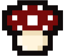

Descripción
Don't Kill My Date ! es un videojuego en el que el jugador encarna a una hechicera que dirige una consulta en un pequeño pueblo. Allí acuden clientes con disputas románticas, a quienes ayuda creando pociones adaptadas a sus necesidades mediante la selección y preparación de distintos ingredientes.
La combinación de ingredientes y la destreza del jugador para trabajar a contrarreloj determinan la calidad y los efectos de cada poción. El resultado influye directamente en el éxito o fracaso de la cita del cliente y en su reputación como hechicera. Además, el jugador podrá explorar los alrededores para encontrarse con distintos personajes y cuidar del huerto de la ciudad. El futuro de la hechicera depende de tus decisiones.
Controles
Tienda: ratón (el diálogo se puede avanzar con la tecla INTRO).
Mapa: ratón / teclas A, W, S, D para moverse y tecla E para interactuar.
Créditos
Sprites pantalla JUGAR, botones, diálogos, libro abierto y top-down de Maeve.
Imagen fondo página web de Pinterest.
Efectos de sonido de Pixabay.
El resto de sprites y música han sido creados por el equipo de desarrollo del juego.